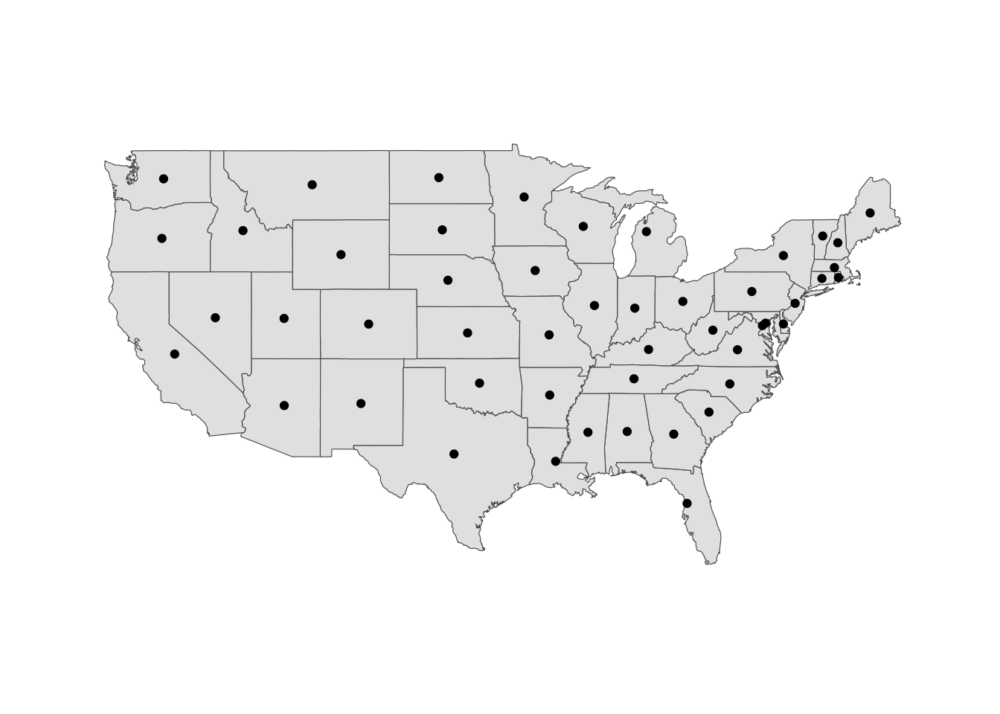
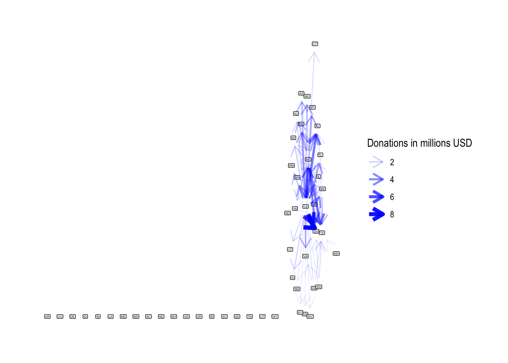
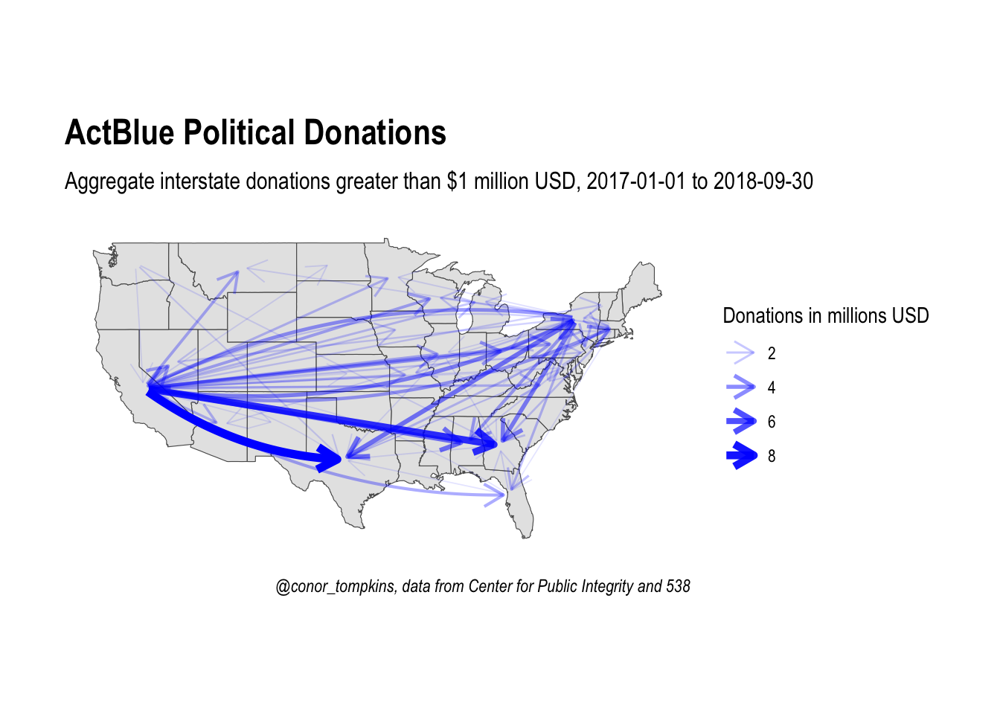
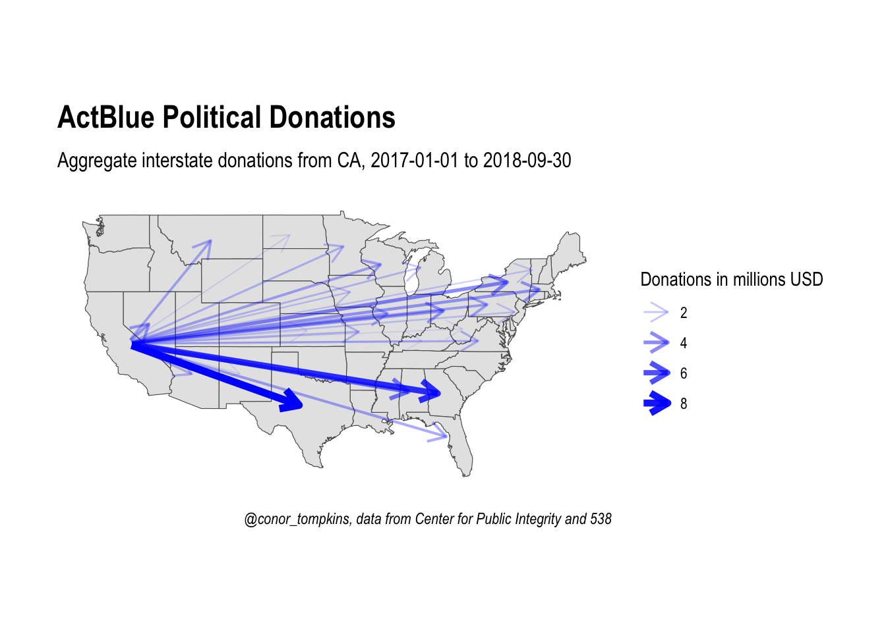
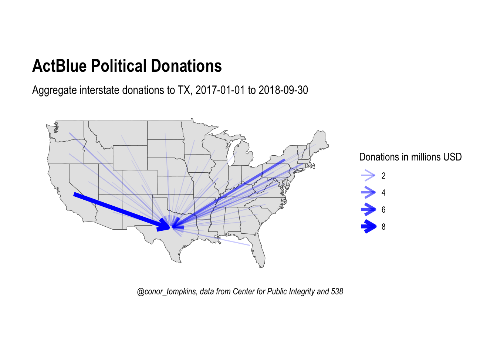

library(tidyverse)
library(maps)
library(sf)
#library(rgeos)
library(janitor)
library(ggrepel)
library(tidygraph)
library(ggraph)
theme_set(theme_graph())
sf::sf_use_s2(FALSE)ActBlue is an online service that allows people to make donations to the political campaigns of Democractic candidates across the country. This post uses graph theory to analyze how political donations moved across states.
Setup
These are the libraries and graph theme I will use:
This code pulls the boundary polygons for the 48 continental U.S. states and the District of Columbia.
#states <- st_as_sf(map("state", plot = FALSE, fill = TRUE))
states <- st_as_sf(maps::map("state", fill=TRUE, plot =FALSE))
head(states)Simple feature collection with 6 features and 1 field
Geometry type: MULTIPOLYGON
Dimension: XY
Bounding box: xmin: -124.3834 ymin: 30.24071 xmax: -71.78015 ymax: 42.04937
Geodetic CRS: +proj=longlat +ellps=clrk66 +no_defs +type=crs
ID geom
alabama alabama MULTIPOLYGON (((-87.46201 3...
arizona arizona MULTIPOLYGON (((-114.6374 3...
arkansas arkansas MULTIPOLYGON (((-94.05103 3...
california california MULTIPOLYGON (((-120.006 42...
colorado colorado MULTIPOLYGON (((-102.0552 4...
connecticut connecticut MULTIPOLYGON (((-73.49902 4...This code finds the center of each state, which will act as the nodes for the network graph.
states <- cbind(states, st_coordinates(st_centroid(states)))I used this website to get the abbreviations for each state.
state_abbreviations <- read_csv("https://raw.githubusercontent.com/conorotompkins/politics/master/data/state_abbreviations.csv") %>%
clean_names() %>%
mutate(state_district = tolower(state_district)) %>%
rename(abbr = postal_code) %>%
select(-abbreviation)
states <- states %>%
left_join(state_abbreviations, by = c("ID" = "state_district")) %>%
arrange(abbr)This pulls the ActBlue data from the Center of Public Integrity GitHub repo.
df <- read_csv("https://raw.githubusercontent.com/PublicI/actblue-analysis/master/data/actblue_states.csv")This joins the boundary data with the state abbreviations.
df %>%
semi_join(states, by = c("contributor_state" = "abbr")) %>%
semi_join(states, by = c("recipient_state" = "abbr")) -> df
df %>%
select(-c(1, count, sum)) %>%
gather(state_type, state_name) %>%
distinct() %>%
group_by(state_type) %>%
summarize(n = n())# A tibble: 2 × 2
state_type n
<chr> <int>
1 contributor_state 49
2 recipient_state 49This code joins the boundary data with the ActBlue data and excludes donations to and from non-continental U.S. states/territories.
states %>%
semi_join(df, by = c("abbr" = "contributor_state")) %>%
semi_join(df, by = c("abbr" = "recipient_state")) -> statesThis plot shows that the boundary shapes and centroids are correct.
states %>%
ggplot() +
geom_sf() +
geom_point(aes(X, Y)) +
theme(panel.grid.major = element_line(colour = 'transparent'))
This code cleans up the ActBlue data and removes intrastate donations.
df %>%
select(-1) %>%
arrange(contributor_state, recipient_state) %>%
mutate(sum = sum / 10^6,
sum = round(sum, digits = 2)) %>%
na.omit() %>%
filter(!(contributor_state == recipient_state)) -> df_intermediateFirst attempt
This is how the data looks when graphed as a typical network graph. The nodes (states) are not positioned geographically, which makes it difficult to understand. Aggregate donations less than $1,000,000 are excluded.
df_intermediate %>%
as_tbl_graph(directed = TRUE) %>%
activate(edges) %>%
filter(sum >= 1) %>%
ggraph(layout =) +
geom_node_label(aes(label = name), size = 1, repel = FALSE) +
geom_edge_fan(aes(edge_width = sum, edge_alpha = sum),
arrow = arrow(length = unit(4, 'mm')),
start_cap = circle(3, 'mm'),
end_cap = circle(3, 'mm'),
color = "blue") +
scale_edge_width_continuous("Donations in millions USD", range = c(.3, 2)) +
scale_edge_alpha_continuous("Donations in millions USD", range = c(.1, 1))
Mapping node positions to state geography
This code turns the data into a network object and sets the minimum threshhold at $1 million
df_intermediate %>%
as_tbl_graph(directed = TRUE) -> g
threshhold <- 1
g %>%
activate(edges) %>%
filter(sum >= 1) -> gThis code creates the node positions for the network graph. The centroid of each state will be used as the node for that state.
node_pos <- states %>%
select(abbr, X, Y) %>%
rename(x = X, y = Y) %>% # node positions must be called x, y
st_set_geometry(NULL)
str(node_pos)'data.frame': 49 obs. of 3 variables:
$ abbr: chr "AL" "AR" "AZ" "CA" ...
$ x : num -86.8 -92.4 -111.7 -119.6 -105.6 ...
$ y : num 32.8 34.9 34.3 37.3 39 ...This code creates the node layout the graph will use and merges the network data with the layout.
manual_layout <- create_layout(g,
#'manual',
layout = node_pos)This is the final graph:
ggraph(manual_layout) +
geom_sf(data = states) +
geom_node_point(size = .5, alpha = 0) +
geom_edge_fan(aes(edge_width = sum, edge_alpha = sum),
arrow = arrow(length = unit(4, 'mm')),
start_cap = circle(1, 'mm'),
end_cap = circle(1, 'mm'),
color = "blue") +
scale_edge_width_continuous("Donations in millions USD", range = c(.3, 2)) +
scale_edge_alpha_continuous("Donations in millions USD", range = c(.1, 1)) +
labs(title = "ActBlue Political Donations",
subtitle = str_c("Aggregate interstate donations greater than $", threshhold, " million USD, 2017-01-01 to 2018-09-30"),
caption = "@conor_tompkins, data from Center for Public Integrity and 538") +
theme(panel.grid.major = element_line(colour = 'transparent')) -> p
p
To and From
This shows all the donations from California. Note the different scale of funds.
ggraph(manual_layout) +
geom_sf(data = states) +
geom_node_point(size = .5, alpha = 0) +
geom_edge_fan(aes(edge_width = sum, edge_alpha = sum),
arrow = arrow(length = unit(4, 'mm')),
start_cap = circle(1, 'mm'),
end_cap = circle(1, 'mm'),
color = "blue") +
scale_edge_width_continuous("Donations in millions USD", range = c(.3, 2)) +
scale_edge_alpha_continuous("Donations in millions USD", range = c(.1, 1)) +
labs(title = "ActBlue Political Donations",
subtitle = str_c("Aggregate interstate donations from ", from_state, ", 2017-01-01 to 2018-09-30"),
caption = "@conor_tompkins, data from Center for Public Integrity and 538") +
theme(panel.grid.major = element_line(colour = 'transparent')) -> p_ca
p_ca
This shows the donations to candidates in Texas. Note the different scale of funds.
# manual_layout <- create_layout(graph = g,
# layout = "manual", node.positions = node_pos)ggraph(manual_layout) +
geom_sf(data = states) +
geom_node_point(size = .5, alpha = 0) +
geom_edge_fan(aes(edge_width = sum, edge_alpha = sum),
arrow = arrow(length = unit(4, 'mm')),
start_cap = circle(1, 'mm'),
end_cap = circle(1, 'mm'),
color = "blue") +
scale_edge_width_continuous("Donations in millions USD", range = c(.3, 2)) +
scale_edge_alpha_continuous("Donations in millions USD", range = c(.1, 1)) +
labs(title = "ActBlue Political Donations",
subtitle = str_c("Aggregate interstate donations to ", to_state, ", 2017-01-01 to 2018-09-30"),
caption = "@conor_tompkins, data from Center for Public Integrity and 538") +
theme(panel.grid.major = element_line(colour = 'transparent')) -> p_tx
p_tx
References
- https://github.com/PublicI/actblue-analysis
- https://datascience.blog.wzb.eu/2018/05/31/three-ways-of-visualizing-a-graph-on-a-map/
- https://lookatthhedata.netlify.com/2017-11-12-mapping-your-oyster-card-journeys-in-london-with-tidygraph-and-ggraph/